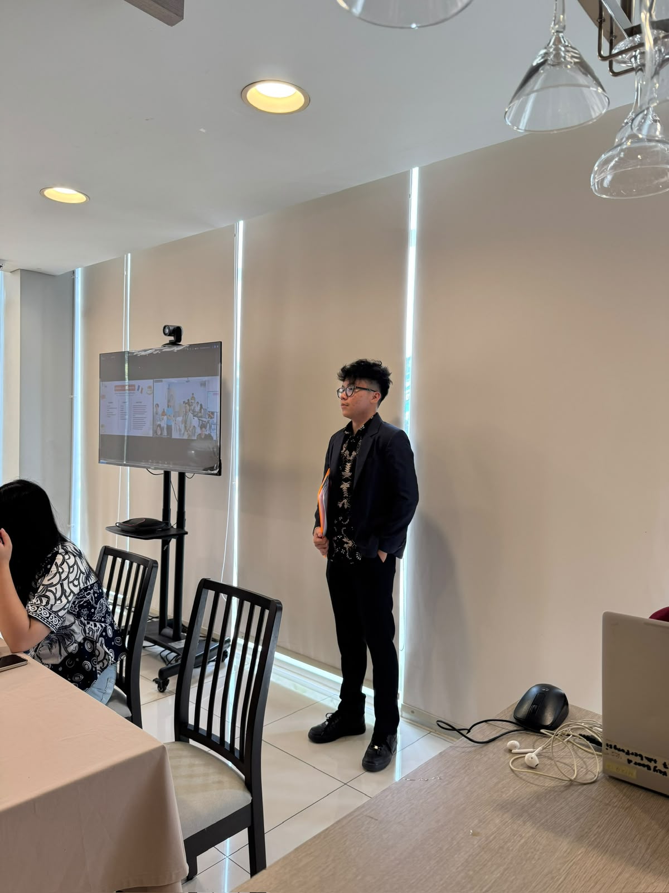

Business Management · Bekasi, Indonesia
AbyanPutraBawono.
Business Management student with experience in mentoring, project coordination, events, and business operations.
About
Interested in marketing, business development, and partnerships. I enjoy working with people, taking initiative, and learning through practical projects.
Experience

Explore my experience across mentoring, events, business, and community projects.
Beelingua BINUS
- Guide participants through learning challenges, coursework, and academic targets.
- Facilitate mentoring sessions and language discussions, and maintain communication with learners.
Kosbi Open 2026
- Supported match operations and helped ensure activities followed event procedures.
- Assisted participants and coordinated communication with the committee.
Perfume Venture
- Coordinated with vendors on sourcing and production and prepared product packaging.
- Supported promotion and tracked budgets and operating expenses.
Character Building Project
- Led community service activities supporting children’s education.
- Delegated responsibilities, organized learning activities, and prepared project reports.
Education
Bina Nusantara University
Business Management · 2024 – Present
GPA 3.19 · 5th semester
SMA Islam Al Azhar 8 Bekasi
Social Sciences · 2021 – 2024
Skills
Achievements & learning
3rd Place · Burn Cup Mobile Legends Tournament
October 2023
Azure AI Basic Fundamentals
Instructor-led and self-paced learning · July 2025
HashMicro HRM Software Training
September 2024 – January 2025
Mastering Excel for Business Administration
AmanExcel · October 2026